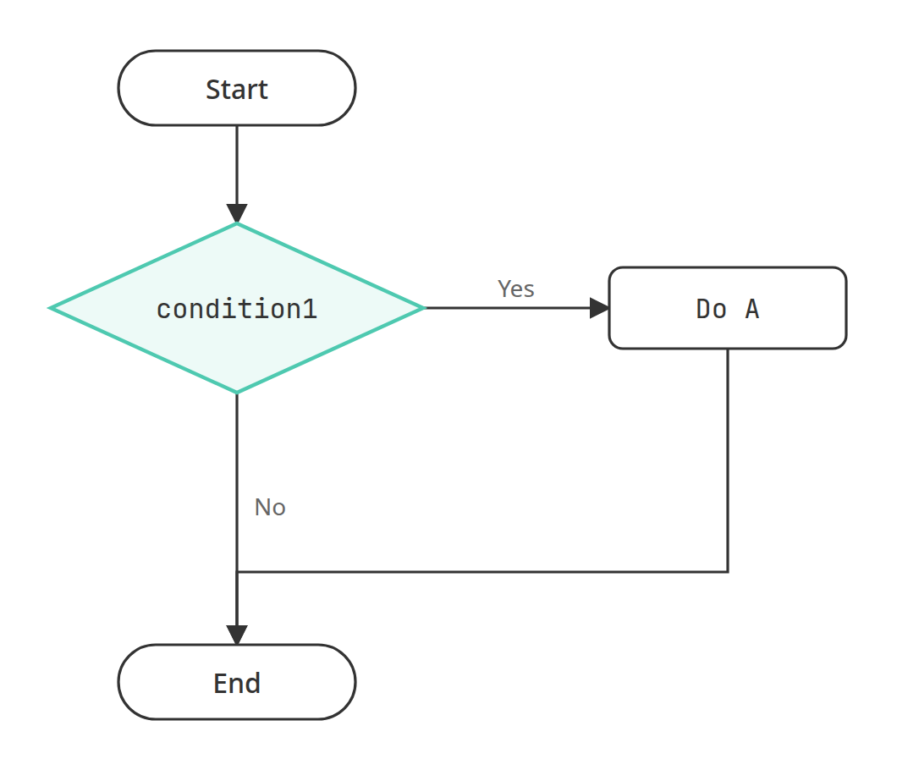
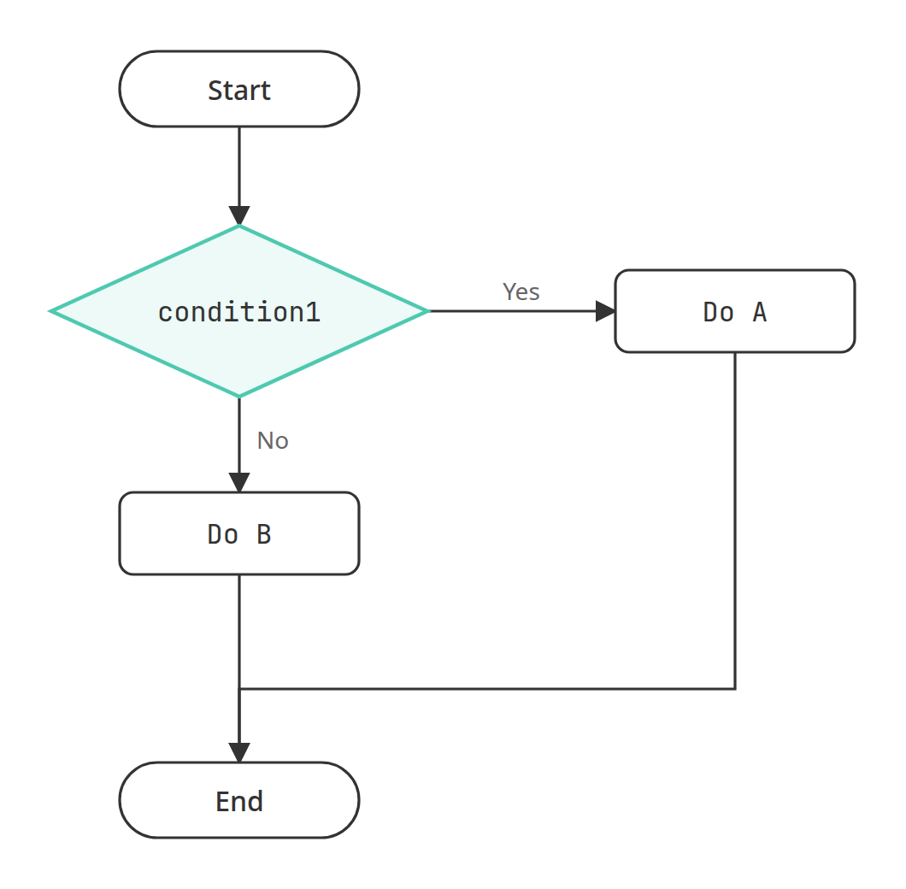
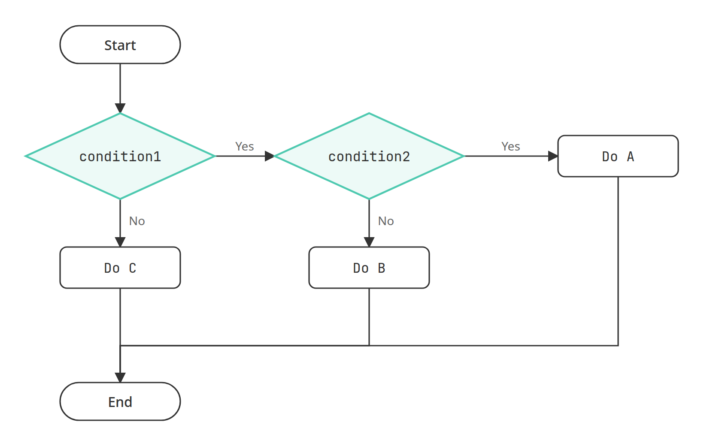
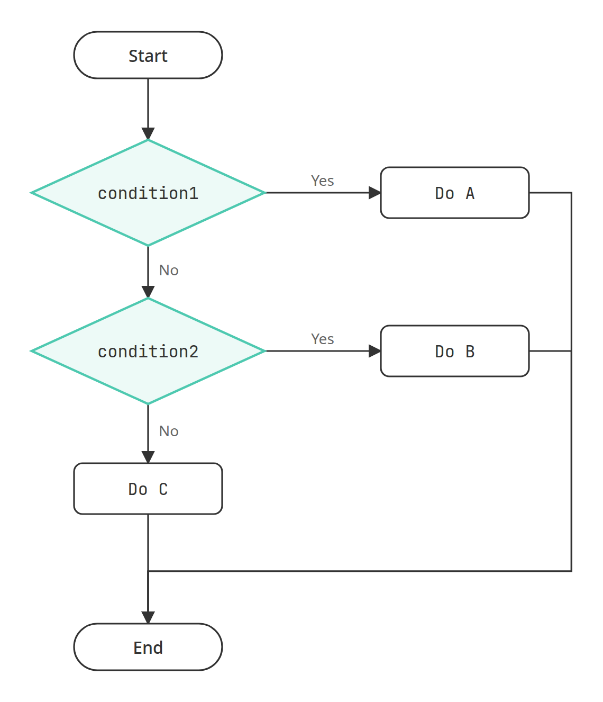

當我們的程式需要根據某些狀況做出判斷，例如某些條件成立的話，程式就對應做出某種行為，這時單純從頭執行到尾的程式便無法滿足我們的需求，因此便需引進流程控制的概念，也就是 if 敘述以及其相關的語法，來讓程式可以完成更複雜的工作。
最基本 if 敘述語法如下，如果滿足 condition1 的條件判斷，則執行 A 程式碼區塊，否則就結束判斷。
if condition1:
Do A
condition1 成立走 Yes 去執行 Do A，不成立走 No 直接結束例如以下的程式，is_raining 是 True，所以會印出提醒帶傘的訊息：
執行結果：
Take an umbrella.
Go out.上面的例子裡，print("Take an umbrella.") 前面空了 4 格，print("Go out.") 則沒有，這個差別是有意義的。Python 用縮排來決定哪幾行屬於 if 的程式碼區塊：縮排的那幾行只在條件成立時才執行，沒有縮排的 print("Go out.") 已經在 if 之外，不論條件是否成立都會執行。把 is_raining 改成 False，就只會印出「Go out.」。
縮排在 Python 是語法的一部分，習慣上用 4 個半形空白，同一個區塊裡的每一行縮排要一致。if 的那一行最後的冒號 : 也不能省略，它代表接下來是一個程式碼區塊。
如果忘了縮排：
錯誤訊息的最後一行如下：
IndentationError: expected an indented block after 'if' statement on line 2如果忘了冒號：
錯誤訊息的最後一行如下：
SyntaxError: expected ':'進一步，如果滿足 condition1 的條件判斷時執行 A 程式碼區塊，不滿足時要執行 B 程式碼區塊，則可以用 if / else 敘述。
if condition1:
Do A
else:
Do B
condition1 成立執行 Do A，不成立執行 Do B，兩條路最後會合若 if 敘述裡面包含有其它的 if 敘述，稱為巢狀 if 敘述。
if condition1:
if condition2:
Do A
else:
Do B
else:
Do C
condition1 成立之後才會再判斷 condition2，決定執行 Do A 或 Do B當程式有多個條件要做判斷時，可使用 if / elif / else 敘述。
if condition1:
Do A
elif condition2:
Do B
......
else:
Do C
condition1 不成立才會判斷 condition2，兩個都不成立才執行 Do C例如，當我們要設計一個 BMI（Body Mass Index）的計算程式時，必須判斷[1]：
此時除了必須運用 if / elif / else 語法外，還需引入關係運算子與邏輯運算子的觀念。
a > b：檢查 a 是否大於 ba >= b：檢查 a 是否大於或等於 ba < b：檢查 a 是否小於 ba <= b：檢查 a 是否小於或等於 ba == b：檢查 a 是否等於 ba != b：檢查 a 是否不等於 b舉例來說：
執行結果：
True
False
True
False
True
False
True
False
True
False
True
False== 和 = 不一樣要注意檢查是否「相等」用的是兩個等號 ==，一個等號 = 是把值指派給變數。在 if 的條件裡寫成一個等號，會產生錯誤：
錯誤訊息的最後一行如下：
SyntaxError: invalid syntax. Maybe you meant '==' or ':=' instead of '='?Python 會提示我們是否想寫的是 == 而不是 =。
and 運算子，例如：condition1 and condition2，兩條件必須同時成立為 True，反之為 False。or 運算子，例如：condition1 or condition2，兩條件至少有一個成立為 True，反之為 False。not 運算子，例如：not condition1，此條件不成立為 True，反之為 False。舉例來說：
執行結果：
True
False
True
False
True
False前面 BMI 正常範圍的條件「大於或等於 18.5、且小於 24」，用 and 可以寫成 bmi >= 18.5 and bmi < 24。Python 也允許把兩個比較直接串在一起，寫成跟數學一樣的 18.5 <= bmi < 24，兩種寫法的結果相同：
執行結果：
True
True綜合以上所學，這個程式會要求使用者輸入身高和體重，接著計算 BMI，然後回傳它所計算的數值並判斷體重是否在正常範圍內。
以下是執行結果：
Please input your height in centimeter:
180
Please input your weight in kilogram:
75
Your BMI is 23.148148148148145, and you have a normal weight.身高和體重用 float() 轉換，是因為使用者可能輸入「175.5」這種帶小數點的數字，用 int() 轉換會產生 ValueError。
注意程式裡第二個條件只寫了 bmi < 24，沒有寫 bmi >= 18.5。這是因為 if / elif / else 會由上往下逐一判斷，遇到第一個成立的條件，就執行它底下的區塊，其餘的條件都會跳過不再判斷。能走到 elif bmi < 24 這一行，代表前面的 bmi < 18.5 已經不成立，也就是 BMI 一定大於或等於 18.5，所以下限不必再寫一次。也因為如此，條件的先後順序會影響結果，把範圍由小到大依序排好，程式才會判斷正確。
這一章我們學會了用 if、if / else、巢狀 if 與 if / elif / else 讓程式依條件走不同的路，也認識了關係運算子與邏輯運算子。Python 用縮排決定哪些程式碼屬於同一個區塊，遇到 IndentationError 或 SyntaxError 時，可以先檢查縮排、冒號，以及比較時是不是少寫了一個等號。
[1] 成人健康體位標準